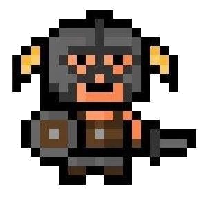

Game Base by Joshua
*Disclaimer* All images are saved on my computer, will work on web addresses later
- Instructions here:
- Try out the buttons
- W, A, S, D, moves and Space fires
- I, J, K, L, moves the block
- Shoot the block
Click to hide.


.
out 1
out 2
out 3
At the bottom of every page make sure you include the following button: